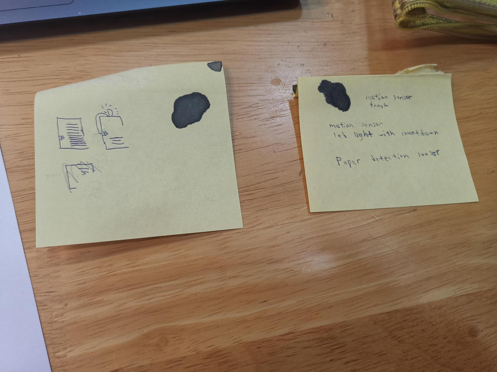
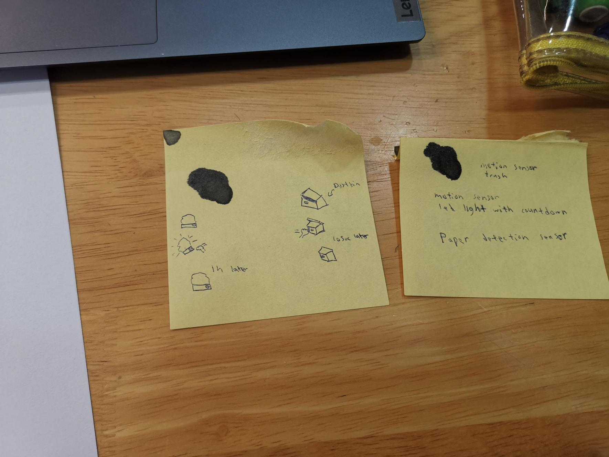

This is a paper detector ,it is made of wood box with ultrasonic sensor and led (snytactic).
It detect if there is paper ,if paper is less than half of the box ,the led will light up (pragmatic)
This device is to make sure paper are always avaliable to people who needed it (semantic)

A dustbin with ultrasonic sensor and servo motot that will open if you wave in front of it ,it helps with hygine.
A light stand with led and ultrasonic sensor ,it will lit up and start a time count down of 1 hour before led shut itself out. Useful for people who are scare of the dark.